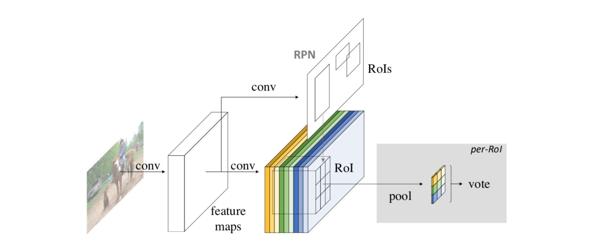
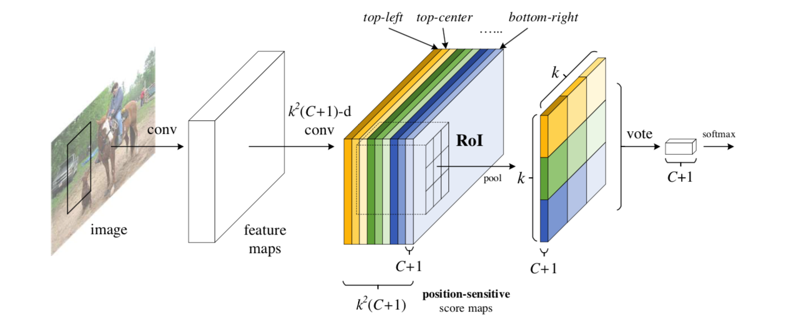
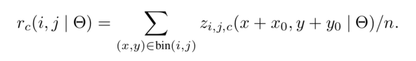
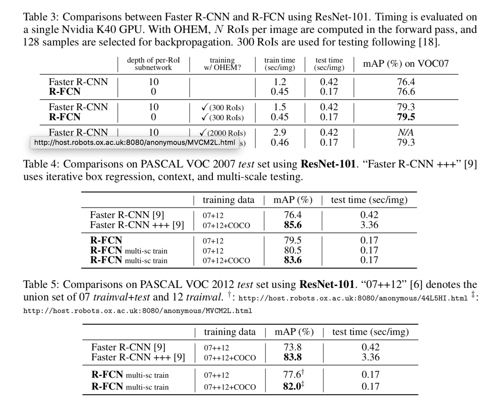

R-FCN: Object Detection via Region-based Fully Convolutional Networks
URL:https://arxiv.org/abs/1605.06409 Github:https://github.com/daijifeng001/r-fcn
R-FCN网络设计的motivation是为了增强物体检测网络位置敏感性，提高物体检测的精度和速度。它的整体结构是一个two stage的网络，RPN网络分支生成Proposal Candidate RoIs ，另一个分支基于此做进一步的refine。

R-FCN网络结构设计的核心是Position-sensitive score maps 和Position-sensitive RoI pooling ：
- Position-sensitive score maps：不妨假设RoI的大小为wxh，那么将RoI均分成k x k个区域，那么每个区域的大小就约为w/k x h/k，对于C分类任务，最后的输出就有kxkx(C+1)个channel，用来表征各个区域的分类信息。而对于候选框的位置，最后的输出是4xkxk个channel。

- Position-sensitive RoI pooling：这一部分主要用来整合Position-sensitive score maps的信息得到最终的结果，Pooling公式中的i，j代表kxk个bin的id信息，c为C个类别中的一个，x0，y0为区域的左上角坐标，那么实际上在整个论文中用的是average pooling，作者也提到max pooling也是可以的。

所以经过Position-sensitive RoI pooling之后输出为kxkx(C + 1), 对于每一个类别c最后的打分是kxk个值的均值，因此最后的输出变成C+1维的向量，最后通过softmax得到最后的分类结果。对于bbox框位置的回归也和分类类似，只是channel数是4xkxk，最后得到4维的向量作为位置信息的偏移量。
- 实验结果，速度相比较faster rcnn还是有比较明显的提升，检测效果也不错。

R-FCN网络的设计有一个特点，在得到score maps之后Position-sensitive RoI pooling没有引进其他的参数，无疑有助于train和inference的速度，通过划分区域人为的对位置做细分也有实际的意义，但是个人对regression阶段也用同样的操作不是很理解..
本博客所有文章除特别声明外，均采用 CC BY-NC-SA 4.0 许可协议。转载请注明来自 Out of Memory！